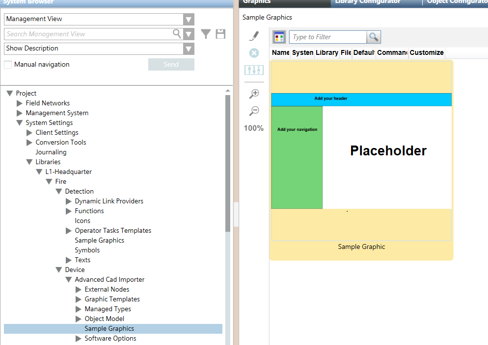

Advanced CAD Importer Sample Graphic
The advanced CAD import can be based on a sample graphic designed to contain the imported drawings. You can use an option in the import wizard to enable this feature and select a predefined sample graphic. A default sample graphics is stored in the following System Browser path:
L1-Headquarter > Fire > Device > Advanced Cad Importer > Sample Graphics
Starting from scratch or from the default sample graphic (see below), you can create your own sample graphic, which you can save to and then invoke from a custom library of yours.
The sample graphic can include any graphical elements along with a mandatory image that acts as placeholder for the imported drawings. In the Description property, the placeholder image must contain AutomaticPlacementPlaceholder.
Default Sample Graphic

Dimensions of the Sample Graphic
In creating a sample graphic, consider the dimensions of the CAD drawings to import. The X/Y aspect ratio of the placeholder image should match the ratio of the CAD drawings. A different aspect ratio will result in smaller images.